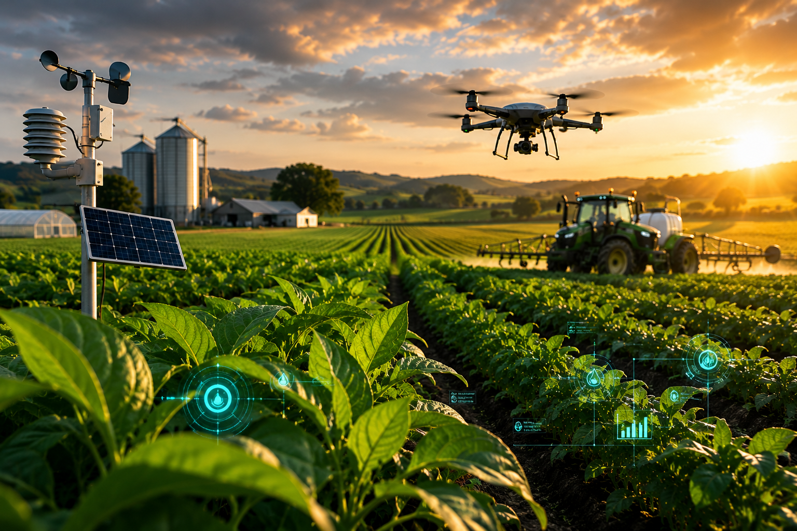

Sensores, drones e inteligência artificial ajudam produtores a aumentar a produtividade e reduzir desperdícios.
A Agricultura Inteligente é um modelo de produção que utiliza tecnologias como drones, sensores, GPS, inteligência artificial e análise de dados para acompanhar todas as etapas do cultivo. Essas ferramentas permitem que o produtor tome decisões mais precisas, aumente a produtividade e utilize os recursos naturais de forma sustentável.
Medem umidade do solo, temperatura, nutrientes e condições climáticas, fornecendo dados em tempo real para o produtor.
Permitem plantio, pulverização e colheita com alta precisão, reduzindo desperdícios e aumentando a eficiência das máquinas.
Aumento médio da produtividade com agricultura de precisão.
Economia de água graças ao monitoramento inteligente.
Maior precisão no acompanhamento das lavouras utilizando drones.